chemistrykit#
chemistrykit is a unified numerical toolkit for computational
chemistry, spanning 14 domains – from reaction kinetics to
crystallography – sharing common ODE integrators and chemical constants
under one NumPy-based API. It’s built for chemistry students working
through a textbook problem, curious learners exploring a topic on their
own, and educators building a demonstration. All 14 domains from
chemistrykit-spec.md (in the repository root) are implemented,
listed below.

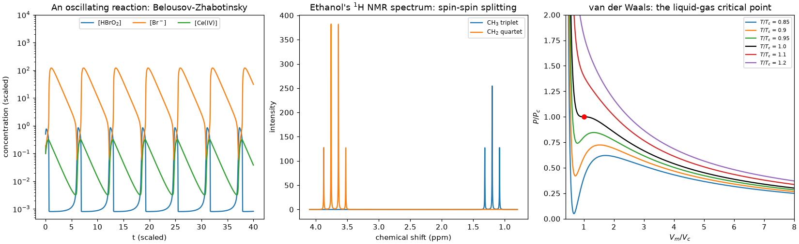
Every subpackage is grounded in the chemistry it implements, not just coded against it: public functions carry runnable, CI-checked examples, and each subpackage’s history page traces the breakthroughs behind it – from Wilhelmy’s 1850 first rate law to the Brunauer-Emmett-Teller isotherm, whose co-discoverer Paul Emmett went on to develop uranium-separation barrier materials for the Manhattan Project – each one linked to the code that reproduces it.
Important
Each domain is a teaching-depth subset of its field, not a complete implementation. chemistrykit is not a replacement for specialist libraries in production work: for that, use the dedicated tools (RDKit, PySCF, Cantera, ASE, OpenMM, pymatgen, and the like) directly.
chemistrykit.analytical– analytical chemistry: redox and complexometric (EDTA) titration-curve simulation with equivalence-point detection, alongsidechemistrykit.solutions’s acid-base titrations; chromatographic plate theory and the van Deemter equation; linear-regression calibration curves with IUPAC-convention limits of detection/quantitation; and propagation-of-uncertainty formulas plus Dixon’s Q-test for outlier rejection.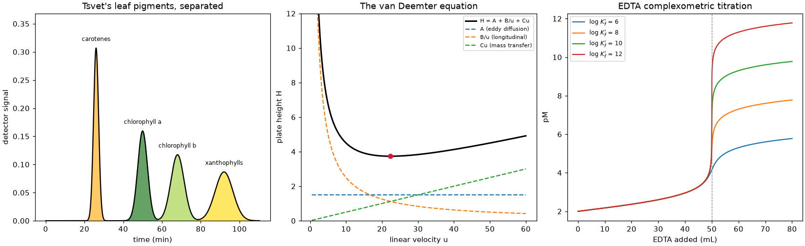
chemistrykit.crystal– crystallography and solid-state chemistry: the 7 crystal systems and general unit-cell volume; hard-sphere packing (packing fraction, coordination number) for SC/BCC/FCC/HCP lattices; ionic-crystal lattice energy via the Born-Lande and Kapustinskii equations, backed by a genuinely converging (Evjen-method) numerical Madelung constant; Bragg’s law and powder-XRD peak positions with structure factors and systematic absences; and Schottky/Frenkel point-defect equilibrium.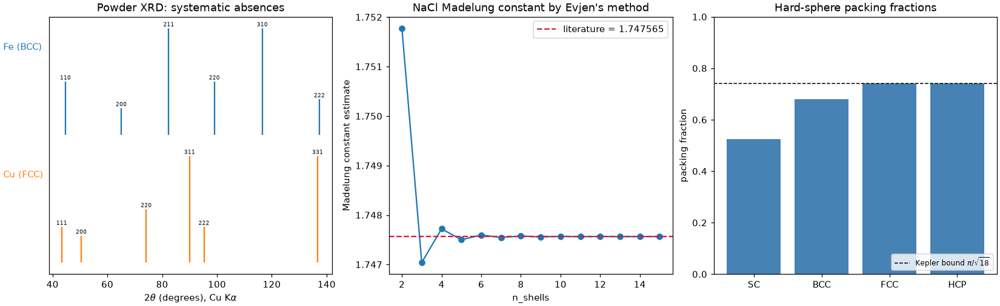
chemistrykit.electrochem– electrochemistry: the Nernst equation for standard and concentration cells with Debye-Huckel activity corrections; a curated standard-reduction-potential table with redox-couple balancing; Butler-Volmer electrode kinetics and Tafel-plot linearization; galvanic vs. electrolytic cells and Faraday’s laws of electrolysis; and a simplified constant-current battery discharge model with Peukert’s-law rate dependence.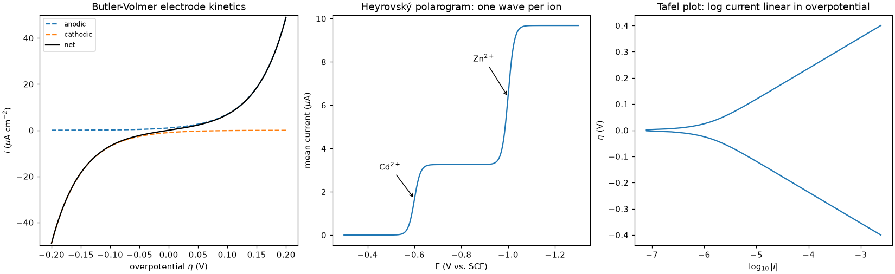
chemistrykit.kinetics– reaction kinetics: integrated rate laws, the Arrhenius equation, Michaelis-Menten enzyme kinetics, a general stoichiometric reaction-network engine, the Brusselator oscillator, Lindemann-Hinshelwood unimolecular falloff, and H2/O2 chain-branching explosion limits.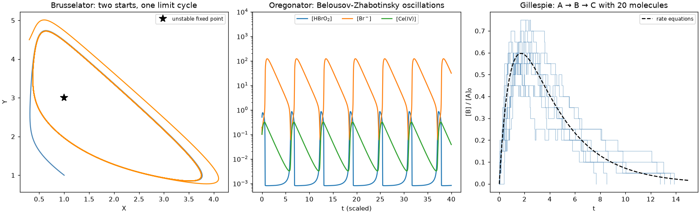
chemistrykit.md– molecular dynamics and force fields: the Lennard-Jones fluid in reduced units (periodic boundary conditions, a Verlet neighbor list, pressure, g(r)), Morse/Buckingham/harmonic bonded potentials, velocity-rescaling/Nose-Hoover thermostats, and XYZ trajectory export for VMD/OVITO.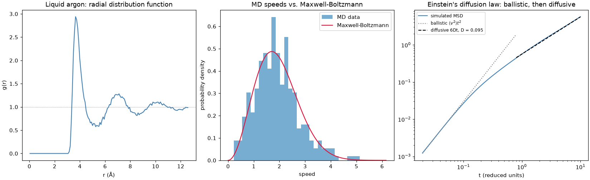
chemistrykit.photochem– photochemistry: Jablonski-diagram excited-state kinetics built onchemistrykit.kinetics’s reaction-network engine; fluorescence/phosphorescence quantum yields and the photochemical quantum yield via Beer-Lambert; Stern-Volmer quenching with a static-vs-dynamic diagnostic; and photostationary- state kinetics for a two-state photoswitch.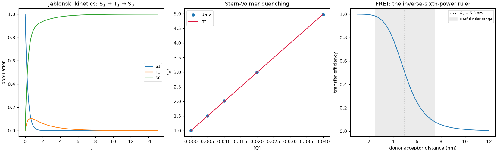
chemistrykit.polymer– polymer chemistry: ideal random-walk chain statistics and the Flory exponent for real chains under theta/good/poor solvent conditions; molecular-weight-distribution statistics and the closed-form Flory-Schulz distribution; step-growth kinetics via the Carothers equation; and chain-growth/ free-radical polymerization kinetics built onchemistrykit.kinetics’s reaction-network engine.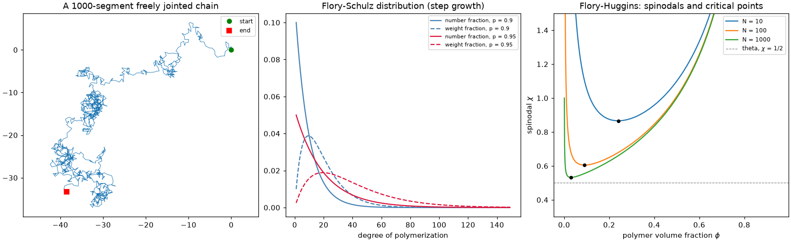
chemistrykit.quantum– quantum chemistry: particle-in-a-box models (with the free-electron model of conjugated-dye color); the quantum harmonic oscillator vs. the exact Morse potential; the rigid rotor; hydrogen-like orbitals; Huckel molecular-orbital theory and its 4n+2 aromaticity rule; a minimal variational treatment of H2+; restricted Hartree-Fock SCF in an STO-3G basis for H2 and HeH+; and Rayleigh-Schrodinger perturbation theory for the anharmonic oscillator.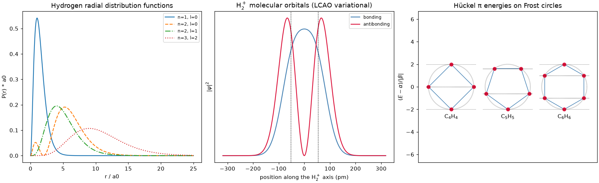
chemistrykit.solutions– solution chemistry: pH/pOH and weak acid/base equilibria with Henderson-Hasselbalch buffers, titration curves, Ksp solubility equilibria, polyprotic and metal-ligand complexation speciation, and Debye-Huckel activity coefficients.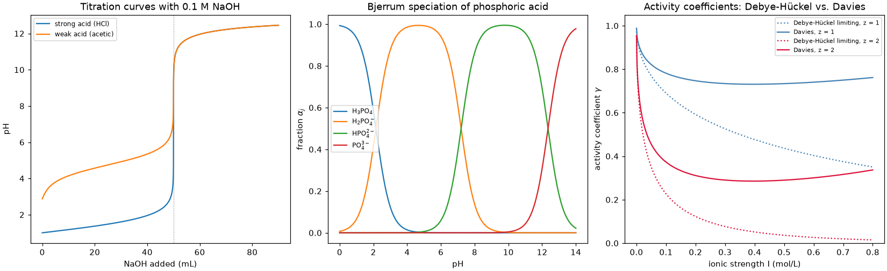
chemistrykit.spectro– spectroscopy: the Beer-Lambert absorbance law and its stray-light deviation from linearity; rigid-rotor rotational spectra with isotope shifts; harmonic vs. Morse vibrational band positions plus a Wilson GF-matrix triatomic normal-mode calculation; Franck-Condon vibronic progressions; and first-order NMR multiplets plus exact second-order (AB, ABX) spectra.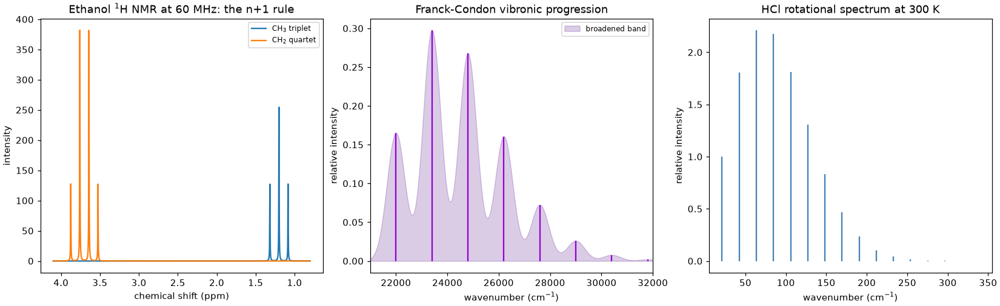
chemistrykit.statmech– statistical mechanics of molecules: translational/rotational/vibrational partition functions and their thermodynamic functions, the Maxwell-Boltzmann speed distribution, and a canonical-ensemble lattice-gas adsorption model.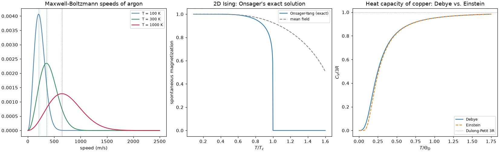
chemistrykit.structure– molecular structure and bonding: a lightweightMoleculecontainer; VSEPR geometry prediction with real 3D coordinate generation; point-group determination from 3D coordinates and character tables; bond order from the Pauling length correlation and Huckel-theory MO coefficients; and formal-charge/ oxidation-state assignment from a Lewis structure.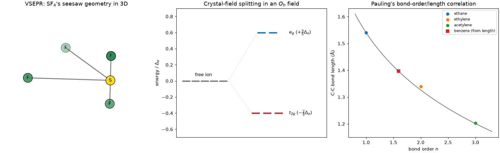
chemistrykit.surface– surface chemistry and catalysis: Langmuir, Freundlich, and BET adsorption isotherms with their standard linearizations for fitting parameters from data; Langmuir-Hinshelwood single- and dual-site surface-reaction kinetics; and a turnover-frequency/rate-enhancement catalysis model built onchemistrykit.kinetics’s Arrhenius equation.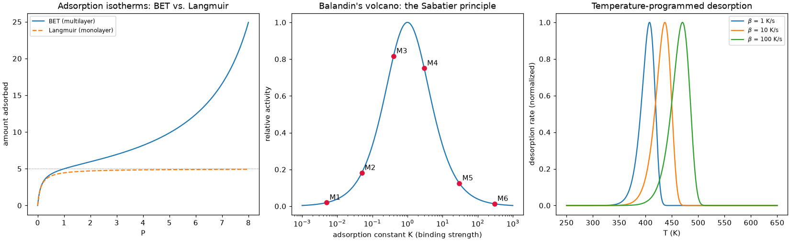
chemistrykit.thermo– chemical thermodynamics: equations of state (ideal gas, van der Waals, Redlich-Kwong), Clausius-Clapeyron and Antoine vapor-pressure curves, reaction equilibrium (Kp/Kc, van’t Hoff, and a Gibbs-energy-minimization equilibrium-composition solver), Raoult’s/Henry’s law mixtures with colligative properties, and Margules/Wilson/NRTL/UNIQUAC activity models for non-ideal vapor-liquid equilibrium and azeotropes.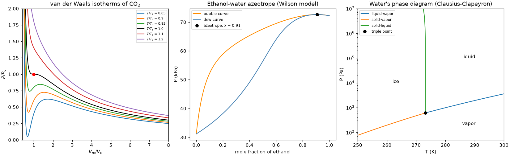


General-chemistry helpers sit at the top level:
chemistrykit.periodic_table (all 118 elements and a formula
parser, e.g. molar_mass("Ca(OH)2")) and chemistrykit.stoichiometry
(equation balancing, including redox; limiting reagents; yields;
empirical formulas).
Units#
Every function takes and returns plain floats and NumPy arrays; there is
no unit-tracking library and nothing checks that units are consistent.
Physical constants in chemistrykit.constants are SI values from
scipy.constants, and each docstring states the unit of every
argument and return value. Most models work in SI (J, m, Pa, K,
mol/m3). The exceptions are the conventional ones, documented per
function: solution concentrations in mol/L, NMR shifts in ppm and
couplings in Hz, spectroscopic line positions in cm-1, the
Lennard-Jones fluid in reduced units (sigma, epsilon, particle mass), and
empirical correlations (Antoine constants, activity-model and
rate-constant parameters) in whatever units their constants were
tabulated in. Converting inputs to the documented units is the caller’s
job.
chemistrykit is part of a family of packages – physicskit, mathematicskit and chemistrykit – that share the same architecture, API conventions, and history-driven documentation.
Conventionally imported as ck:
import chemistrykit as ck
network = ck.kinetics.StoichiometricNetwork.consecutive(k1=1.0, k2=0.3)
result = network.integrate((0.0, 10.0), dt=1e-3, method="rk4")
acid = ck.solutions.WeakAcid(Ca=0.1, Ka=1.8e-5)
print(acid.pH())
fluid = ck.md.LJFluid.from_lattice(n_per_side=6, density=0.7, temperature=1.0)
result = fluid.run(dt=0.002, n_steps=2000)